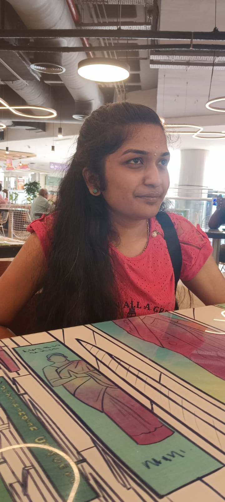

Passionate Computer Science Engineering student with hands-on experience in full stack application development.

A passionate Computer Science Engineering student with strong interest in full stack development and building impactful software solutions.
I am a passionate Computer Science Engineering student with a strong foundation in Java programming and a growing interest in full stack application development. I enjoy turning ideas into real-world applications using clean and efficient code.
I have gained practical exposure through multiple internships in software development, SQL, Java programming, and industrial environments. These experiences helped me understand how technology is applied in real-world scenarios and strengthened my problem-solving and analytical skills.
I am highly motivated to learn new technologies and continuously improve my technical expertise. I enjoy working on projects that challenge me and allow me to explore both frontend and backend development.
Currently, I am pursuing my undergraduate degree in Computer Science Engineering at Panimalar Engineering College, Chennai, where I actively work on improving my coding skills and preparing myself for a successful career in the IT industry.
📅 September 2023 – Present | Chennai
Currently pursuing Computer Science Engineering with a focus on full stack development, software engineering, and modern web technologies.
📅 March 2022 – May 2023 | Chennai
Completed senior secondary education with a focus on Computer Science, building a strong foundation in programming and computer logical thinking.
📅 June 5, 2025 – July 5, 2025
Completed an internship focused on SQL, gaining hands-on experience in database design, queries, joins, and data manipulation.
📅 June 9, 2025 – June 25, 2025
Gained exposure to industrial operations, manufacturing processes, and real-world engineering practices in a government defense organization.
📅 May 5, 2025 – June 1, 2025
Worked on technical concepts and have done web development projects.
📅 February 27, 2025 – April 4, 2025
Completed an internship focused on web application development, gaining hands-on experience in building responsive and interactive web applications. Worked with HTML, CSS, JavaScript, and responsive web design principles, along with Firebase for backend integration. The internship enhanced practical skills in front-end development, application design, and real-world project implementation.
📅 August 19, 2024 – September 15, 2024
Completed a Java programming internship covering core Java concepts, object-oriented programming, and application development.
This is a full-stack machine learning project developed with a React front-end and Python back-end. Users can report waste-related issues, submit innovative ideas to win rewards, and classify waste types such as plastic, vegetable, and eco waste using a CNN (Convolutional Neural Network) model.
The system also includes an admin panel to manage reported issues efficiently. This project tackles real-world challenges in waste management using AI-powered automation and user engagement.
Technologies Used: React, CSS, Python, Machine Learning (CNN), AI-based classification
A full-featured music application where users can log in, view, and play their favorite songs. Users can like songs and play them later. The application also includes an admin panel to add new songs.
The app is developed using React and Tailwind CSS for the frontend, and Firebase handles backend functionalities, including authentication, real-time database, and storage.
Technologies Used: React, Tailwind CSS, Firebase, Frontend & Backend Integration
A complete leave management system with three types of users: Employee, Officer, and Admin. Employees and Officers can log in, submit leave requests with valid reasons, and specify leave type such as casual or earned leave. They can also track the status of their leave applications, which are pending by default.
Admin users can review leave requests, approve or reject them, and manage all leave statuses. The system provides an easy and transparent workflow for leave approvals.
Technologies Used: HTML, CSS, JavaScript (Frontend), PHP + XAMPP (Backend & Database)